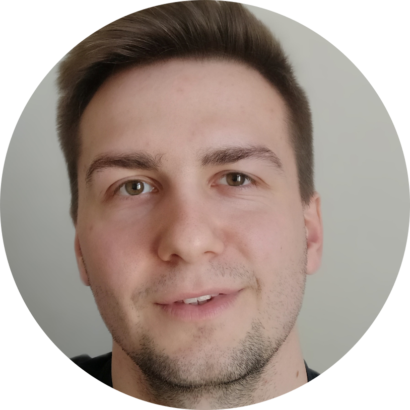
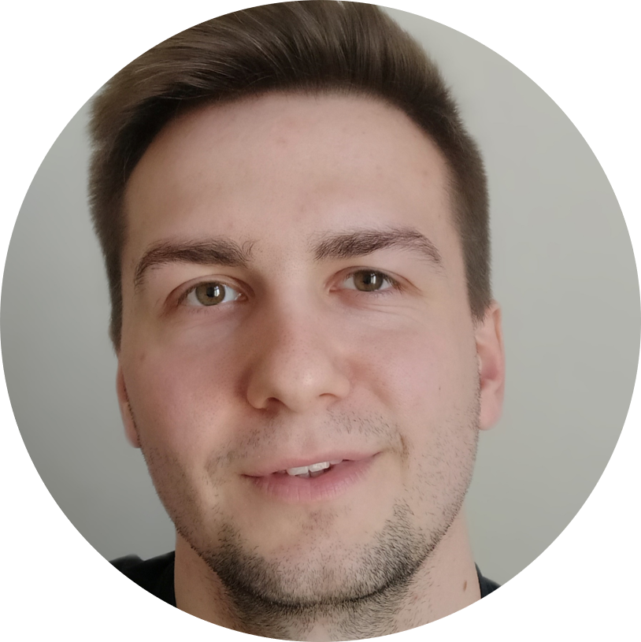
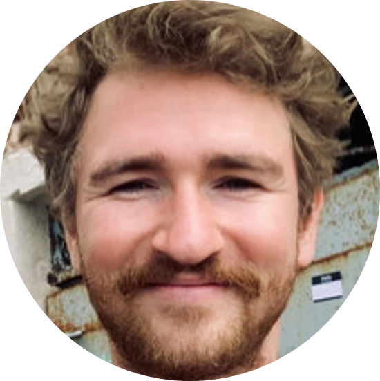

Hybrid networking
Monday 11 September, 13:15-14:15
In person and online participants will get to know each other in two rounds of speed-networking discussions in small groups, each with a 360 degrees camera-microphone.
R
Nicklas Hafiz, Karoline Sachse, Felix Henninger
  Monday 11 September, 14:30-17:30
 Monday 11 September, 14:30-17:30
You will learn the basics of the R programming language for data wrangling in the RStudio environment. Basic R knowledge is needed for the rest of the course.
Nicklas Hafiz (PhD student) and Dr. Karoline Sachse, researchers at the Institute for Educational Quality Improvement of the Humboldt University of Berlin, and Felix Henninger, PhD student in Statistics at the LMU, will be your co-instructors.
The self-paced tutorial for this workshop can be found here: https://nickhaf.github.io/r_tutorial/
Julia - A fresh approach to scientific computing
Aaron Peikert, Maximilian Ernst, Moritz Ketzer
 Monday 11 September, 14:30-17:30
Monday 11 September, 14:30-17:30
For selected participants who already know the basics of R, there will be the opportunity to learn the basics of the Julia programming language through a facilitated self-paced tutorial. Julia is a high-level dynamic programming language designed for numerical and scientific computing, data analysis, machine learning, and more. Julia’s user-friendly interface, resembling popular languages like R, Python, and Matlab, makes it easily accessible for learners. Its focus on performance, however, enables computational speeds that often rival, or even surpass, those of low-level languages such as C or Fortran. Therefore, Julia is an ideal choice for large-scale data analysis and other computationally intensive tasks, as it can be orders of magnitude faster than R or Python.
In this workshop, we will introduce you to the basics of Julia and the key features setting it apart from other languages.
This workshop is designed for R users who are interested in learning a new programming language or want to improve their skills in data analysis and scientific computing. No prior experience with Julia is required, but a understanding of R is recommended.
Depending on the number of attendees from the summer school planned for this workshop, we may open it to public registration (with priority to LMU members). If so, it will be advertised on the LMU Open Science Center mailing list.
A team from the Max Planck Institute for Human Development, the Max Planck School of Cognition, and the Max Planck UCL Centre for Computational Psychiatry and Ageing Research will instruct this workshop: Dr. Aaron Peikert, post-doctoral fellow, Maximilian Ernst, PhD student, and Moritz Ketzer, PhD student.
The self-paced tutorial for this workshop can be found here: https://formal-methods-mpi.github.io/Workshop.jl/stable/
Preregistration: why not, how
Malika Ihle
 Tuesday 12 September, 13:13-15:15
Tuesday 12 September, 13:13-15:15
In this workshop, we will review what detailed information preregistrations and registered reports should contain, and discuss collectively discuss the benefits and disadvantages of embracing such practices, as well as possible fear and concerns, in a structured academic debate. Finally, we will look into how to preregister in practice on the Open Science Framework, and practice the level of precision needed in each section of a preregistration template by peer-reviewing snippets.
Simulations of data and data analyses in R
Malika Ihle
Tuesday 12 September, 15:30-17:30
You will be guided through the What, Why, and How of simulations of data and data analyses. We will follow this self-paced tutorial: https://malikaihle.github.io/Introduction-Simulations-in-R/. The material covers the concept of power analyses for simple tests, how to check for false positive rates, and how simulations can help with preparing a preregistration. Basic knowledge of the R syntax is needed.
Version control with Git with RStudio
Malika Ihle, Felix Henninger, Pat Callahan
Wednesday 13 September, 13:15-16:15
In this facilitated self-paced tutorial, you will learn the basic concept of version control using RStudio as one of many possible GUI interfaces that can interact with Git. You will learn how to use version control for your own workflow (Git within RStudio with backup online on GitHub) and for collaborative coding (fork, clone, pull requests on Github). The self-paced tutorials can be found at: https://malikaihle.github.io/Introduction-RStudio-Git-GitHub/ and https://malikaihle.github.io/Collaborative-RStudio-GitHub/.
Dr Malika Ihle, LMU Open Science Center coordinator, Felix Henninger, PhD student in Statistics, and Pat Callahan, M.Sc. student in Epidemiology will co-facilitate this session.
Research Data Management (RDM) plans
Laura Meier
 Wednesday 13 September, 16:30-17:30
Wednesday 13 September, 16:30-17:30
The planning of a research project and the management of one’s own data bring many advantages in everyday research. Laura Meier, from the RDM information team of University Library of LMU Munich, will present what to look for when creating a data management plan and how web-based tools such as the Research Data Management Organiser (RDMO) can be used to make work easier.
Quarto
Florian Pargent, Florian Kohrt
 Thursday 14 September, 13:15-15:15
Thursday 14 September, 13:15-15:15
Quarto makes transparent and reproducible data analysis simple and fun. In a nutshell, Quarto lets you mix text written in markdown with chunks of executable code written in, e.g., R or Python. You can use it for interactive notebooks, and export to a large number of formats including HTML, PDF/LaTeX, Microsoft Word or PowerPoint, or even interactive websites. In this workshop, we cover the fundamentals, including the markdown syntax, code chunks and inline code, and the output formats available. We also go over citations, cross-referencing, and templating, which ultimately allow you to write academic papers entirely in Quarto.
LMU psychologists Dr Florian Pargent and B.Sc. Florian Kohrt will facilitate this workshop.
The self-paced tutorial for this workshop can be found here: https://florianpargent.github.io/Quarto_LMU_OSC/
What’s next? Facilitated group discussion
Verena Heise
 Thursday 14 September, 16:30-17:30
Thursday 14 September, 16:30-17:30
Dr Verena Heise, Open Science Freelancer, will facilitate a discussion on how you can plan to integrate parts of this course into your research and the strategies you can put in place to best support yourself in reaching your goals, following the “Ten simple rules for implementing open and reproducible research practices after attending a training course” (https://doi.org/10.1371/journal.pcbi.1010750).
Systematic reviews
Sofija Vojvodic
 Friday 15 September, 13:15-15:15
Friday 15 September, 13:15-15:15
Sofija Vojvodic (PhD candidate at Charité Universitätsmedizin), Preclinical systematic review research group Berlin Institute of Health QUEST Center for Responsible Research, will provide you with a comprehensive understanding of systematic review and meta-analysis, which are essential research synthesis methods used to determine the current state of knowledge, assess the reliability of evidence, and identify areas for future research. Through a combination of lectures and hands-on activities, you will learn the key steps involved in conducting systematic reviews and meta-analyses, and the importance of this evidence synthesis method for responsible research.
How to use the Open Science Framework (OSF)
Malika Ihle
Friday 15 September, 15:30-17:30
Through a self-paced tutorial, you will learn to use the Open Science Framework infrastructure to centralise your research projects, connect your regular tools to it (e.g. GitHub, GitLab, Google Drive, Dropbox, Zotero, etc.), explore how to share and link your data, material, preregistration, and preprint to your published article.